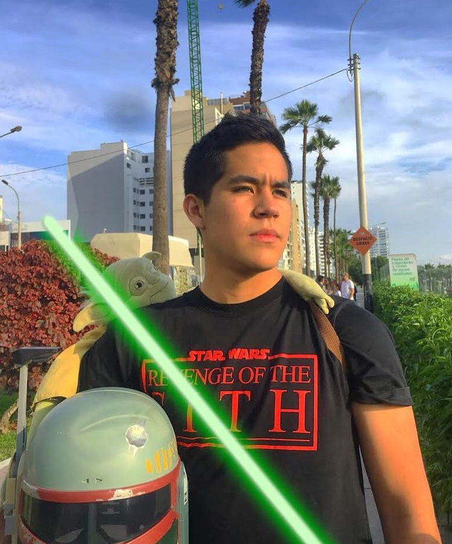

Javier Barreda Joo
~Javier durante una misión Jedi en Kashykk~
Sobre él
Javier Eduardo Barreda Joo también conocido como Javo, es un rockstar peruano, caballero Jedi, emprendedor e ingeniero. Nació en la ciudad de Lima, Perú, el 22 de marzo de 1999.
Educación
Javier asistió a la escuela secundaria Isabel Flores de Oliva ubicada en el distrito de San Isidro de 2004 a 2015 cuando se graduó. Desde niño, se enamoró de Star Wars, y hasta el día de hoy cree que algún día puede convertirse en un Maestro Jedi. Está estudiando Ingeniería Ambiental en la UTEC y se graduó del Programa de Futuros Emprendedores de la UDEP en 2020. Javier ha tomado en diferentes cursos sobre sostenibilidad, emprendimiento en economías emergentes, innovación, política y programación.
Experiencia laboral
Javier es CEO y cofundador de Luteach, una plataforma de e-learning para estudiantes STEM. Luteach busca reducir la alta tasa de deserción universitaria en LATAM y al mismo tiempo crear oportunidades laborales para estudiantes apasionados por enseñar y compartir sus conocimientos. Desde 2017 hasta la actualidad, se ha desempeñado como guitarrista y músico del Coro Nacional de Niños del Perú y del Ministerio de Cultura del Perú. Entre 2017 y 2019 ha participado en muchos proyectos con importantes startups e instituciones como una turbina eólica para captar agua del aire y proveer un sistema de riego por goteo (Smithsonian Institution), un detector de sólidos disueltos en agua potable para no permitir que la gente la beba ( IGUA). En 2016 fue jefe de distrito del censo nacional.
Voluntariado
Experiencia sirviendo como mentor en varios bootcamps, desafíos y concursos de emprendimiento para estudiantes universitarios, especialmente en temas de medio ambiente, educación y sostenibilidad. Fue Director de Campus Hult Prize en UTEC y Facilitador de Design Thinking y Business Model Canvas en el Congreso de Emprendimiento de la UNI.
Contactar a Javier
Completa tus datos y tu mensaje destinado hacia él